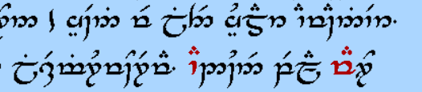

First, you've clearly got the hang of the transliteration. There are a few minor mistakes, and a couple things to be aware of since we're in the realm of transliterating English names, but overall you've got it down.
There are two schools of thought as far as representing English with Tengwar. One, the "orthographic" approach, uses more or less a one-to-one correspondence between our Latin letters and the Tengwar symbols; the other, "phonemic" approach, is based on pronunciation. I'll go over Rick's and your names as examples, although there's nothing wrong with your rendering except a left-off vowel on "Robiniel".
This is perfect in the orthographic transliteration. In the phonemic transliteration, the ck won't need the geminate marker, since the final /k/ sound doesn't sound any different than it would if spelled "Ric" or "Rik". Typeset versions:
Orthographic: 7z:T
Phonemic: 7zT
Besides the lack of a geminate marker, there may be another difference here if you go with the phonemic representation: the final vowel. Interpreting the orthographic version phonemically, you get "ricky-awn". If it's more like "ricky-ahn" or "ricky-own", then you would use different vowel signs:
Orthographic: 7z:T`G5^
Phonemic: 7zT`G5^, 7zT`G5#, or 7zT`G5N^.
Phonemically, the vowel ◌^ is correct if your name is pronounced "RAW-bin", but should be ◌# if pronounced "RAH-bin". (For many American English speakers, there's no difference between "rah" and "raw"; in that case, take your pick. :) )
Orthographic: 7w^5%
Phonemic: 7w^5% or 7w#5%.
Orthographic: 7w^5T`GjR
Phonemic: 7w^5T`GjR or 7w#5T`GjR.
I would maybe drop the -ia when adding -iel, so you get "Opheliel" instead of "Opheliaiel". In any case, what you have here is Opelia. To get "Ophelia" in the orthographic scheme, you need to insert a tengwa for the h; in the phonemic one, you would use f instead of the ph combo. Also, assuming it's pronouned "oh-feely-a", those first two vowels would be long in the phonemic version:
Orthographic: q^9jR`G`C
Phonemic: ~Ne~Gj`G`C
The word vána is Quenya, not Sindarin, so the vowels go over the previous consonant instead of the following one. Also, the first a is long:
r~C5#
Tolkien personally wrote several versions of Namárië in Tengwar; if you Google around, you can find them. For example, there's an analysis of one of them here. These should be a good check when borrowing phrases from that poem.
Here's a snippet that shows the phrases you've borrowed here; the word lintë starts in the middle of the first line shown:
You used the non-Quenya vowel placement, but other than that it looks different because the Quenya mode of Tengwar has several individual tengwar that represent consonant clusters, which are used instead of the individual consonants. For instance, the nt in lintë is represented by 4 instead of the tengwa for n followed by the tengwa for t. Similarly, the ld in yuldar is represented by m. You can find all of these in the chart here; the important thing is, when you have two consonants together, look to make sure there's not a single glyph for the cluster before you reach for their individual letters.
When typeset, lintë yuldar comes out like this:
jT4F hÌJm#6
And lissë-miruvóreva like this:
jT,FtT7Jy~N7FyD